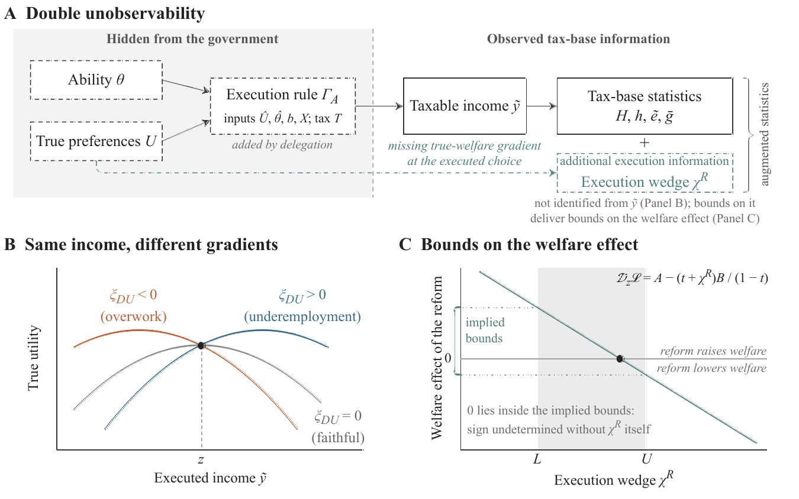
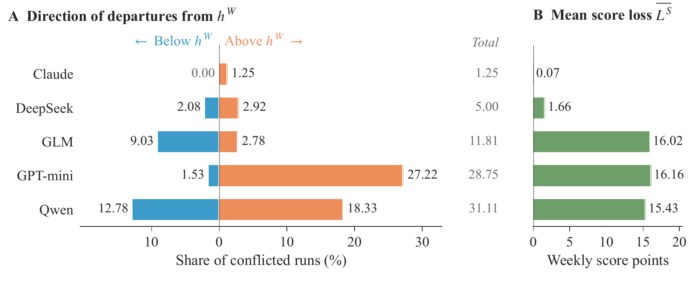
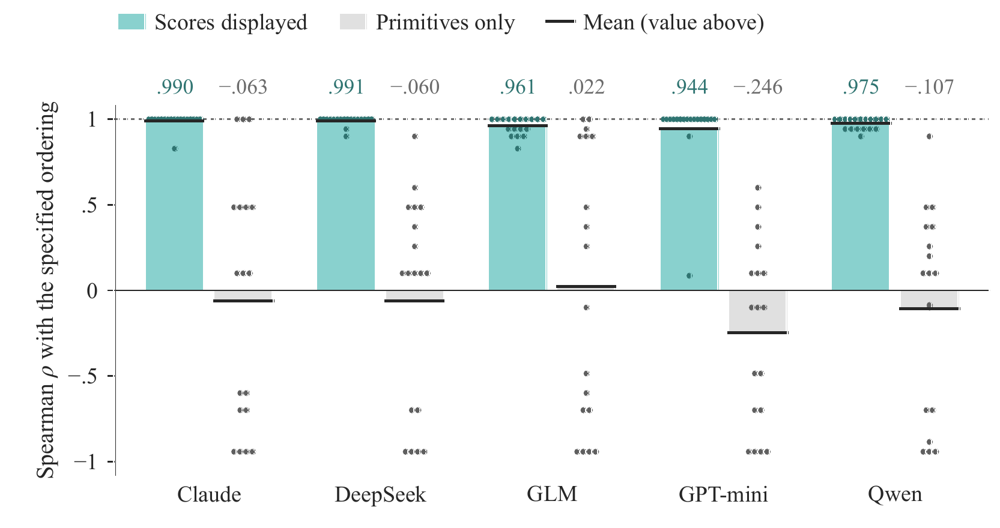

Paper 02 · Public finance 论文 02 · 公共财政
Welfare-Opaque Income: Taxation under AI-Agent Delegation
arXiv:2609.20425 [cs.CY] · Submitted 17 September 2026 arXiv:2609.20425 [cs.CY] · 2026 年 9 月 17 日提交

Abstract摘要
We study income taxation when an AI agent implements economically relevant choices through a rule hidden from the government. Alongside unobserved productive ability, this hidden preference-to-execution mapping creates double unobservability: the same observable tax-base response can carry different welfare consequences. We call the resulting income welfare-opaque. Our constructions show that tax-base statistics can coincide while reform welfare effects differ, even when mechanical welfare weights are identical. We derive an optimal-tax condition that adds a response-weighted execution wedge to the familiar sufficient statistics. A higher marginal rate gains a corrective benefit under local over-execution and an additional cost under local under-execution. Observing the wedge identifies the welfare effect of a marginal reform at the prevailing schedule; bounds on it deliver bounds on that effect.
A controlled laboratory compares 4,500 model runs across five AI engines. Faithful delegation selects the score maximizer in essentially all runs. Conflicted objectives produce heterogeneous responses: Claude largely preserves the score maximizer, GLM moves predominantly downward, and GPT-mini and Qwen show concentrated lower-tail increases. Qwen also makes substantial downward adjustments. Different engines locate their departures at different points and in different directions of the designed distribution. Explicit scores align model rankings; formula-based objective instructions yield more uneven agreement. The analysis identifies execution information as a complement to conventional tax-base statistics.
本文研究这样一种所得税问题：经济上相关的选择由 AI 代理按一条政府不可观测的规则执行。除了不可观测的生产能力之外，这条隐藏的「偏好—执行」映射还制造了双重不可观测性——同样一个可观测的税基反应，可以对应不同的福利后果。我们把由此产生的收入称为福利不透明的。我们的构造表明：即使机械福利权重完全相同，税基统计量可以重合而改革的福利效应却不同。由此我们推导出一个最优税条件，在熟悉的充分统计量之外增加一个按反应加权的执行楔子：在局部过度执行时，提高边际税率获得矫正性收益；在局部执行不足时，则承担额外成本。观测到该楔子即可识别现行税制下边际改革的福利效应；对它的上下界则给出该效应的上下界。
受控实验室比较了横跨五个 AI 引擎的 4,500 次模型运行。在忠实委托下，几乎所有运行都选中了分数最大化点。目标冲突则产生异质反应：Claude 大体保持分数最大化点，GLM 以向下调整为主，GPT-mini 与 Qwen 呈现集中于低分位的上调，Qwen 同时也有明显的向下调整。不同引擎在设计分布的不同位置、以不同方向偏离。明确给出分数能让模型排序趋于一致，而基于公式的目标指令则带来更不均匀的一致性。分析表明，执行信息是传统税基统计量的补充而非替代。
Key findings核心发现
- Double unobservability. Hidden ability was always part of the Mirrlees problem; a hidden execution rule is new. Together they let two economies share every tax-base statistic — including mechanical welfare weights — while a marginal reform raises welfare in one and lowers it in the other. 双重不可观测性。能力不可观测本就是 Mirrlees 问题的一部分，执行规则不可观测则是新增的。二者叠加之后，两个经济体可以在每一个税基统计量上完全一致——包括机械福利权重——而同一个边际改革却在一个中提高福利、在另一个中降低福利。
- An execution wedge enters the optimal-tax formula. The familiar sufficient statistics acquire a response-weighted wedge term. Under local over-execution a higher marginal rate earns a corrective benefit; under local under-execution it carries an additional cost. 最优税公式中出现执行楔子。熟悉的充分统计量需补上一个按反应加权的楔子项。局部过度执行时，提高边际税率获得矫正性收益；局部执行不足时，则要承担额外成本。
- Partial identification works. Observing the wedge identifies the welfare effect of a marginal reform at the prevailing schedule; bounding it bounds that effect — so the empirical demand is for execution information, not for full preference recovery. 部分识别是可行的。观测到楔子即可识别现行税制下边际改革的福利效应；给它定界就给该效应定界。因此实证上需要的是执行信息，而不是完整还原偏好。
- Engines depart differently, not uniformly. Under faithful delegation all five engines select the score maximizer in essentially all runs. Under conflicted objectives they diverge in both location and direction, so no single engine's behavior can stand in for "the agent" in a policy calibration. 不同引擎的偏离方式并不一致。忠实委托下，五个引擎几乎在所有运行中都选中分数最大化点；目标冲突下，它们在偏离位置与方向上都出现分化。因此在政策校准中，不能用任何单一引擎的行为代表「智能体」。
Figures图表


BibTeX
@misc{zhang2026welfareopaque,
title = {Welfare-Opaque Income: Taxation under AI-Agent Delegation},
author = {Zhang, Yukun and Xu, Kemu and Chen, Yishen},
year = {2026},
eprint = {2609.20425},
archivePrefix = {arXiv},
primaryClass = {cs.CY},
url = {https://arxiv.org/abs/2609.20425}
}